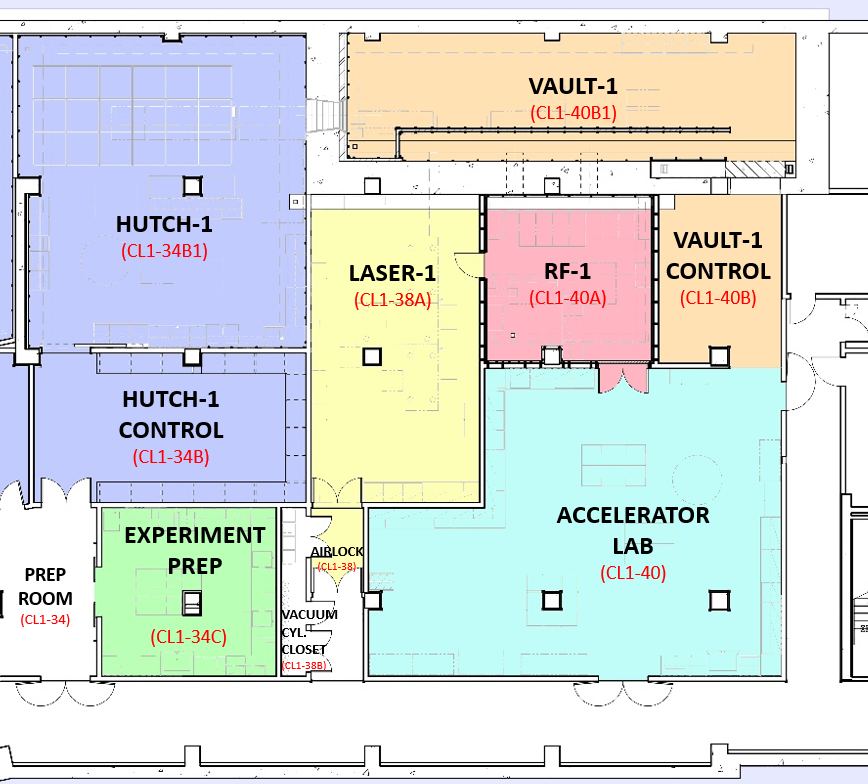

Welcome to CXLS Interlock System Documentation’s documentation!
About This Documentation
The purpose of this documentation is to provide a complete guide to the CXLS interlock system. This document will outline user guides to all interlock subsystems, as well as provide documentation on testing and troubleshooting the system.
CXLS Facility Overview
{kind=link}
Ionizing Radiation Hazards
In the CXLS linear accelerator, the relativistic electrons can interact with materials of beam pipes and LINACs. These Coulomb interactions between the relativistic electrons and atomic nuclei within these materials cause the electrons to experience acceleration and releases a high energy photon, gamma radiation. This process is known as Bremsstrahlung. These emitted gamma rays can then interact with nuclei and through the process of photodisintegration neutron radiation is produced. These processes cause elevated radiation felids in Vault-1 and Hutch-1.
Laser Hazards
In the CXLS, there are three class 4 lasers used throughout the system. A UV laser is used at the photocathode to eject electrons in bunches via the photoelectric effect. Once these electrons are at relativistic speeds, they collide with an IR laser and through inverse Compton scattering produce hard x-ray pulses. These x-rays will interact with a test sample in pump-prove configuration where the pump laser can produce light in the THz spectrum. Because of these high power lasers through the facility, laser enclosures have been design to create laser safe areas while lasers are operational.
Interlocks System
The CXLS interlocks system are sets of sensors and components that send data to predefined digital logic systems. This digital logic decides to change the state of actuators and safety displays. These interlocks are designed to enforce proper sequential operations and control access to hazards. Built into the system are redundancy to increase reliability, and fail safe designs to ensure systems are put into a safe state incase of a user of system failure.
Note
This documentation is a work in progress.